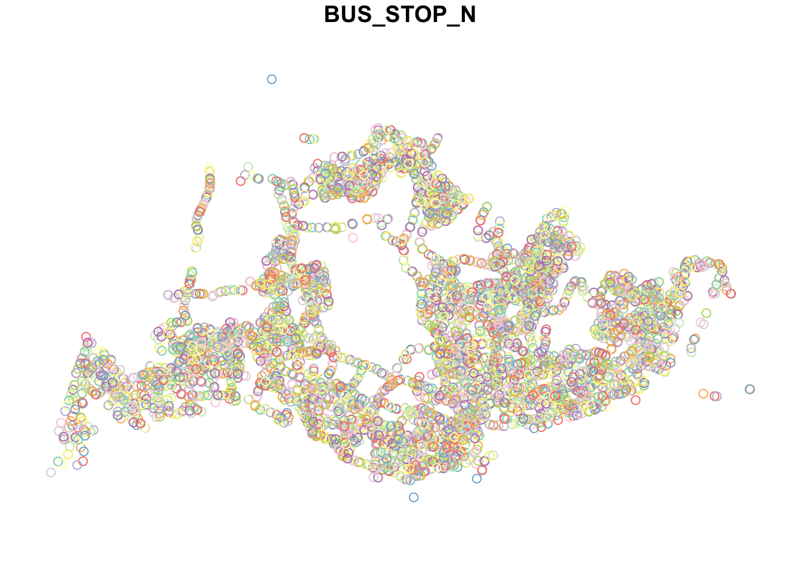
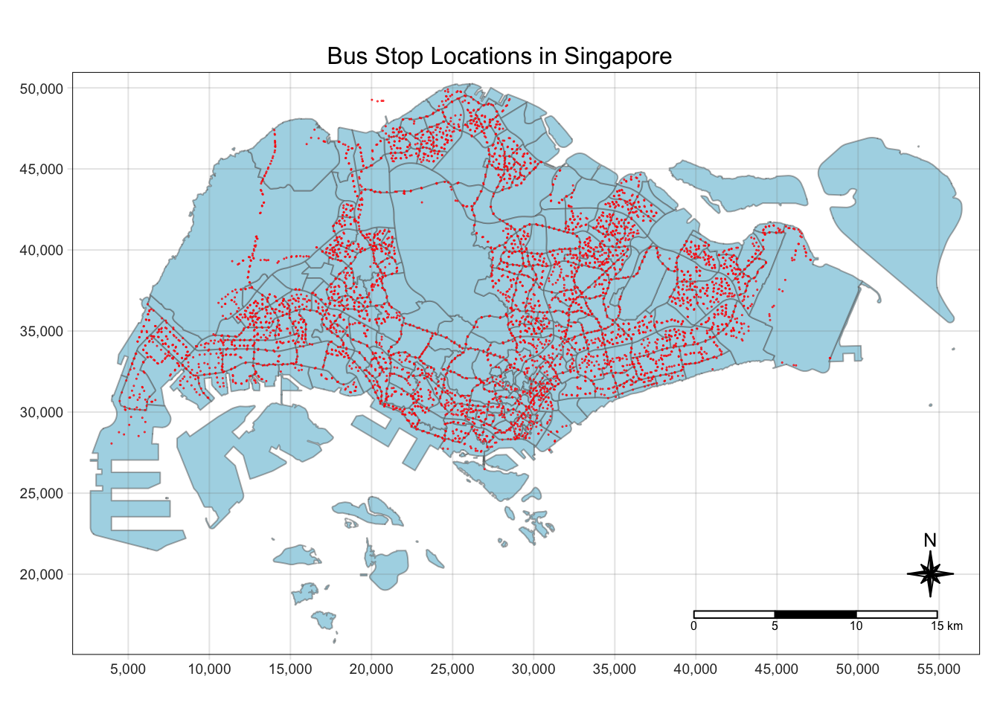
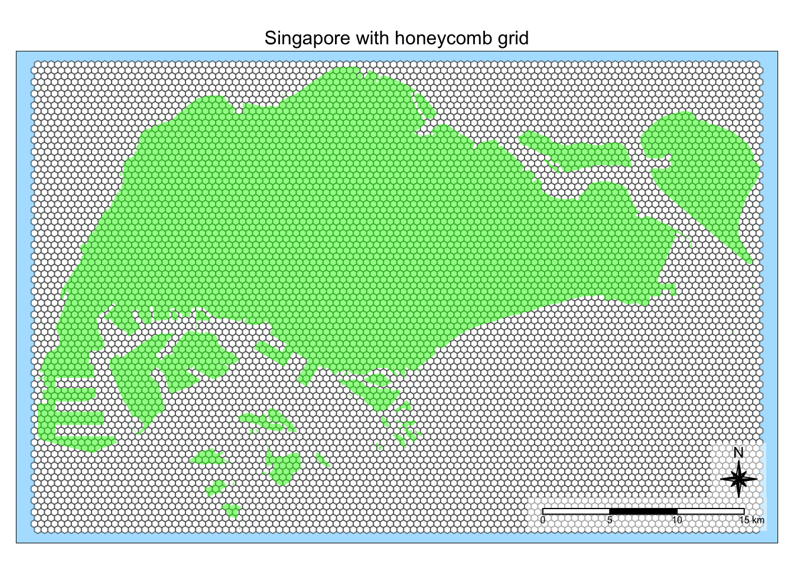
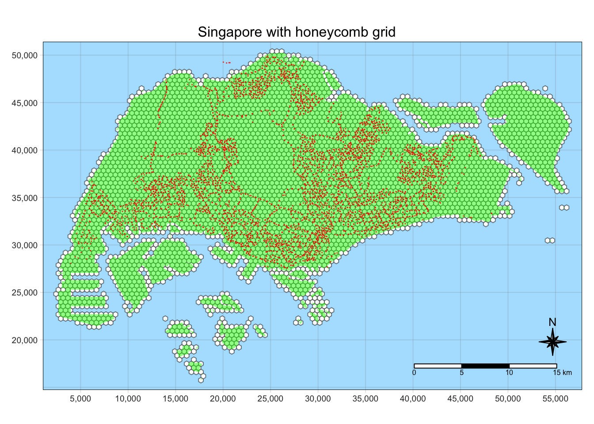

pacman::p_load(sf, spdep, tmap, tidyverse)Take Home Exercise 1: Geospatial Analysis for the Public Good
Overview
The aim of this study is to uncover spatial and spatio-temporal mobility patterns of public bus passengers in Singapore.
The main modes of analysis to be used here are Local Indicators of Spatial Association (GLISA) and Emerging Hot Spot Analysis (EHSA).
In doing these study, we will be looking at bus trips started during the hours below.
| Peak hour period | Bus tap on time |
|---|---|
| Weekday morning peak | 6am to 9am |
| Weekday afternoon peak | 5pm to 8pm |
| Weekend/holiday morning peak | 11am to 2pm |
| Weekend/holiday evening peak | 4pm to 7pm |
More details about the study can be found here.
Setup
Preparing the data sets
Geospatial
These data sets are in shp format.
Master Plan 2019 Subzone Boundary (Web), originally from data.gov.sg but used the one provided on E-learn.
Bus Stop Locations, available publicly from LTA DataMall
Aspatial
These data sets are in csv format.
Passenger Volume By Origin Destination Bus Stops from LTA DataMall via API (need to request for access)
August 2023
September 2023
October 2023 - we will focus on this as the main data set
Preparing the data/ directory
Before starting our analysis, we have to organize the data sets in a directory.
Geospatial data will be located under
data/geospatialAspatial data will be located under
data/aspatialdata/rdsto be created to store data that we can reuse and to make our code reproduceable.
Finally, we are left with the following file structure:
Take-home_Ex1
├── Take-home_Ex1.qmd
└── data
├── aspatial
│ ├── origin_destination_bus_202308.csv
│ ├── origin_destination_bus_202309.csv
│ └── origin_destination_bus_202310.csv
├── geospatial
│ ├── BusStop.cpg
│ ├── BusStop.dbf
│ ├── BusStop.lyr
│ ├── BusStop.prj
│ ├── BusStop.sbn
│ ├── BusStop.sbx
│ ├── BusStop.shp
│ ├── BusStop.shp.xml
│ ├── BusStop.shx
│ ├── MPSZ-2019.cpg
│ ├── MPSZ-2019.dbf
│ ├── MPSZ-2019.prj
│ ├── MPSZ-2019.qmd
│ ├── MPSZ-2019.shp
│ └── MPSZ-2019.shx
└── rdsSetting Up the R Environment
After preparing the data sets, we can finally proceed to load the R packages needed for this study.
tmap: for thematic mapping
sf: for geospatial data handling
tidyverse: for non-spatial data handling
sfdep: for spatial analysis
Data Wrangling
After setting up the data sets and the R environment, we can finally proceed with data wrangling.
Importing data into R environment
BusStop data set
The BusStop data set is a in shp format. We can import it by using st_read() from the sf package.
busstops <- st_read(dsn = "data/geospatial",
layer = "BusStop")Reading layer `BusStop' from data source
`/Users/kjcpaas/Documents/Grad School/ISSS624/Project/ISSS624/Take-home_Ex1/data/geospatial'
using driver `ESRI Shapefile'
Simple feature collection with 5161 features and 3 fields
Geometry type: POINT
Dimension: XY
Bounding box: xmin: 3970.122 ymin: 26482.1 xmax: 48284.56 ymax: 52983.82
Projected CRS: SVY21
Tip
As this already uses SVY21 datum that is appropriate for Singapore 🇸🇬 local context, we can proceed with using data on its own.
Next, let’s take a look at the available columns to identify which columns we can use for analysis. We will decide this later after looking at other data sets.
glimpse(busstops)Rows: 5,161
Columns: 4
$ BUS_STOP_N <chr> "22069", "32071", "44331", "96081", "11561", "66191", "2338…
$ BUS_ROOF_N <chr> "B06", "B23", "B01", "B05", "B05", "B03", "B02A", "B02", "B…
$ LOC_DESC <chr> "OPP CEVA LOGISTICS", "AFT TRACK 13", "BLK 239", "GRACE IND…
$ geometry <POINT [m]> POINT (13576.31 32883.65), POINT (13228.59 44206.38),…Lastly, let’s do a quick plot to see a visual glimpse of the data.
plot(busstops['BUS_STOP_N'])
This is not enough information to do the analysis as we are missing information on which regions of Singapore 🇸🇬 the bus stops are located.
Singapore boundary data
To visualize where the bus stops in Singapore 🇸🇬, we need data that shows boundaries covering the country. We will use the Master Plan 2019 Subzone Boundary (Web) data set that has been used in class.
As this is also a shp file, we will import it the same way as in BusStop data set.
mpsz <- st_read(dsn = "data/geospatial",
layer = "MPSZ-2019")Reading layer `MPSZ-2019' from data source
`/Users/kjcpaas/Documents/Grad School/ISSS624/Project/ISSS624/Take-home_Ex1/data/geospatial'
using driver `ESRI Shapefile'
Simple feature collection with 332 features and 6 fields
Geometry type: MULTIPOLYGON
Dimension: XY
Bounding box: xmin: 103.6057 ymin: 1.158699 xmax: 104.0885 ymax: 1.470775
Geodetic CRS: WGS 84
Important
mpsz <- mpsz %>% st_transform(crs=3414)
head(mpsz)Simple feature collection with 6 features and 6 fields
Geometry type: MULTIPOLYGON
Dimension: XY
Bounding box: xmin: 8012.578 ymin: 22108.68 xmax: 35287.9 ymax: 31092.38
Projected CRS: SVY21 / Singapore TM
SUBZONE_N SUBZONE_C PLN_AREA_N PLN_AREA_C REGION_N
1 MARINA EAST MESZ01 MARINA EAST ME CENTRAL REGION
2 INSTITUTION HILL RVSZ05 RIVER VALLEY RV CENTRAL REGION
3 ROBERTSON QUAY SRSZ01 SINGAPORE RIVER SR CENTRAL REGION
4 JURONG ISLAND AND BUKOM WISZ01 WESTERN ISLANDS WI WEST REGION
5 FORT CANNING MUSZ02 MUSEUM MU CENTRAL REGION
6 MARINA EAST (MP) MPSZ05 MARINE PARADE MP CENTRAL REGION
REGION_C geometry
1 CR MULTIPOLYGON (((33222.98 29...
2 CR MULTIPOLYGON (((28481.45 30...
3 CR MULTIPOLYGON (((28087.34 30...
4 WR MULTIPOLYGON (((14557.7 304...
5 CR MULTIPOLYGON (((29542.53 31...
6 CR MULTIPOLYGON (((35279.55 30...Let’s do a quick mapping of the boundary map and the bus stops for a visual check.
tmap_style("natural")
tm_shape(mpsz) +
tm_fill("lightgreen", title = "Singapore Boundary") +
tm_borders(alpha = 0.5) +
tm_layout(main.title = "Bus Stop Locations in Singapore",
main.title.position = "center",
main.title.size = 1.0,
legend.height = 0.35,
legend.width = 0.35,
frame = TRUE) +
tm_compass(type="8star", size = 2) +
tm_scale_bar() +
tm_grid(alpha =0.2) +
tm_shape(busstops) +
tm_dots(col = "red", size = 0.001, title = "Bus Stops")
Important
Some bus stops on the North are outside of the border. These are the bus stops that for bus routes (e.g. CWx, SJE) the cross the border to Johor Bahru in Malaysia 🇲🇾
Bus commuter data
Finally, we import the bus commuter data. We will use the Passenger Volume By Origin Destination Bus Stops data sets to provide data about bus commuter volumes.
These files are in csv file format so we will use read_csv to import them.
Important
We aim to analyze data for 3 months. However, we will focus on the September 2023 for now to simplify the steps.
odbus202310 <- read_csv("data/aspatial/origin_destination_bus_202310.csv")Extracting bus trips started during peak areas
TODO: Filter by time period and aggregate the number of trips with origin of the bus stops
Combining them all together
TODO: Join bus stop data with peak data, do not combine with mpsz as we will use honeycomb for polygon data
Generating a honeycomb grid based on Singapore map
A honeycomb grid contains a grid of tessellated or tiled hexagons.
Why hexagons?
Some benefits of using a hexagon grid are:
A hexagon is the polygon with the most number of sides that can tessellate (or tile). Hence it is the most “circular” of the polygons that can be tessellated.
Distances of the centroid from one hexagon to the next are consistent all around the hexagon, making it easy to find neighbors.
More information about hexagons in the context of spatial analysis can be found in https://desktop.arcgis.com/en/arcmap/latest/tools/spatial-statistics-toolbox/h-whyhexagons.htm
Tip
As in the map in Singapore boundary data, the subzones have different shapes and sizes. The analysis will benefit from using a consistently-shaped regions because our analysis requires a lot of neighbor calculations.
Generating hexagons
For this study, we will create hexagons with apothem of 250m. This is the distance of the line segment from the center to the midpoint of the edge.
Tip
The edge length is 288.675m.
\[ 250m/cos(30) = 288.675m \]
Following the steps on https://urbandatapalette.com/post/2021-08-tessellation-sf/, we will use st_make_grid() to generate the hexagons for analysis.
We need to provide a value for cellsize in the function, which is defined as “for hexagonal cells the distance between opposite edges”.
This is equivalent to \(2 \times L_{apothem} = 2 \times 250m\), which is 500m.
sg_honeycomb <- st_make_grid(mpsz,
cellsize = 500,
what = "polygon",
square = FALSE) %>%
st_sf()
Important
We have to apply `st_sf()` to convert the result to a data frame that can be used for the succeeding steps.
Let’s check if the honeycomb grid fits with Singapore.
tm_shape(sg_honeycomb) +
tm_fill(col = "white", title = "Hexagons") +
tm_borders(alpha = 0.5) +
tm_layout(main.title = "Singapore with honeycomb grid",
main.title.position = "center",
main.title.size = 1.0,
legend.height = 0.35,
legend.width = 0.35,
frame = TRUE) +
tm_compass(type="8star", size = 2, bg.color = "white", bg.alpha = 0.5) +
tm_scale_bar(bg.color = "white", bg.alpha = 0.5) +
tm_shape(mpsz) +
tm_fill("green", title = "Singapore Boundary", alpha = 0.5)
Note
The grid has been generated correctly because:
It covers exactly the whole country of Singapore.
Looking at the scale, there are 10 hexagons within a 5 km length. This means each hexagon has an apothem of 250m.
Fitting grid exactly to the region
The grid above has hexagons outside of Singapore bounds. We need to filter the grids such that we are left with only those that intersect with Singapore boundary.
We will use st_intersects() and filter() to filter out the hexagons that intersect Singapore.
sg_honeycomb$n_collisions = lengths(st_intersects(sg_honeycomb, mpsz))
sg_honeycomb <- filter(sg_honeycomb, n_collisions > 0)Let’s generate a map again if the cleaning generated our expected result.
tm_shape(sg_honeycomb) +
tm_fill(col = "white", title = "Hexagons") +
tm_borders(alpha = 0.5) +
tm_layout(main.title = "Singapore with honeycomb grid",
main.title.position = "center",
main.title.size = 1.0,
legend.height = 0.35,
legend.width = 0.35,
frame = TRUE) +
tm_compass(type="8star", size = 2) +
tm_scale_bar() +
tm_grid(alpha =0.2) +
tm_shape(mpsz) +
tm_fill("green", title = "Singapore Boundary", alpha = 0.5) +
tm_shape(busstops) +
tm_dots(col = "red", size = 0.001, title = "Bus Stops")
Important
There are some tiny islands outside of the Singapore mainland. Although they have no bus stops, we will keep them in the data frame for now as other hexagons also do not have bus stops in them (as they have no red dots inside).
As we now have a perfectly fitting honeycomb grid, we will save this to an rds file for later reuse.
write_rds(sg_honeycomb, "data/rds/sg_honeycomb.rds")